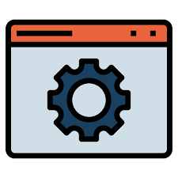

Hi, My name is Ritik
and I am a passionate

Work Experience

HTML Developer (2018-2019)
I started web development Since 2018 as a beginner.
There are are lots of things to remember to apply in web site
It is the best way to grow-up yourself and IQ

Back-End Developer (2019-2020)
The amount of time it takes to become a backend developer can vary depending on several factors,
such as your learning pace,
previous experience and the amount of time you are able to dedicate to learning
Web Designer (2020-2021)
A website engineer is a computer and technology professional who builds websites and
applications.
Using computer coding skills,
They can create web applications and destinations that meet user needs

Java uing DSA (2022-2023)
I learned java using DSA from Apna College and implement array, arraylist etc
Along this I learn various pattern in java using DSA
I learned lots of things to this course